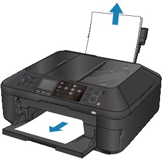

Remove the paper following the procedure below.
-
Slowly pull the paper out, either from the Rear Tray or from the Paper Output Slot, whichever is easier.
 Note
Note-
If the paper tears and a piece remains inside the machine, turn the machine off, open the Scanning Unit (Cover), and remove the paper.
Be careful not to touch the components inside the machine.
After removing all paper, close the Scanning Unit (Cover), and turn the machine back on.
-
If you cannot pull the paper out, turn the machine off and turn it back on. The paper may be ejected automatically.
-
-
Reload the paper, and press the OK button on the machine.
If you turned off the machine in step 1, all print jobs in the queue are canceled. Reprint if necessary.
Note-
When reloading the paper, confirm that you are using the paper suited for printing and are loading it correctly.
-
We recommend you use paper other than A5 sized one to print documents with photos or graphics; otherwise, the printout may curl and cause paper exit jams.
-
If you cannot remove the paper or the paper tears inside the machine, or if the paper jam error continues after removing the paper, contact the service center.